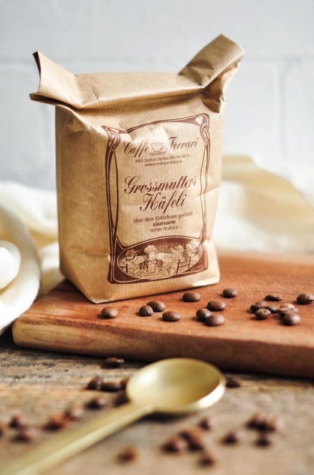
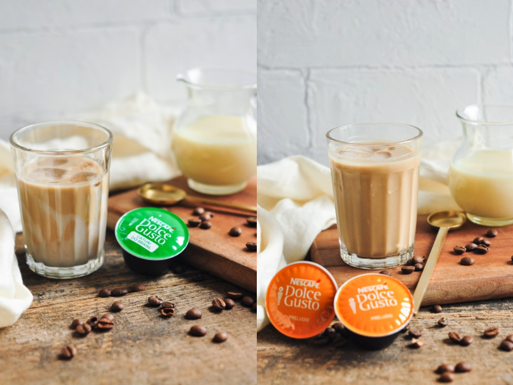
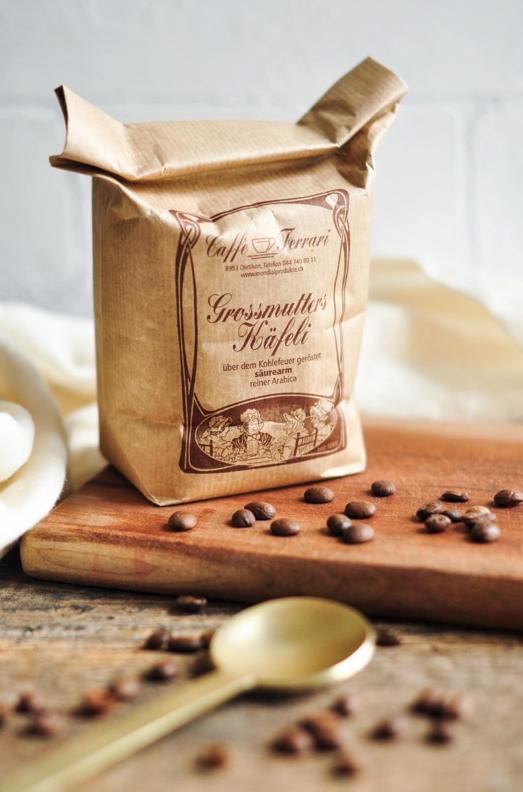
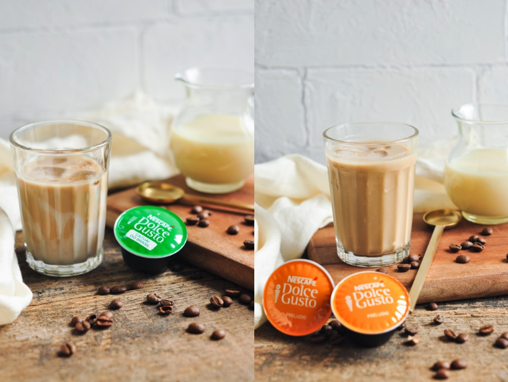
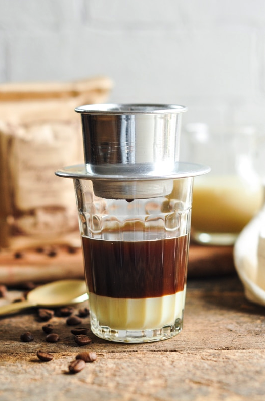
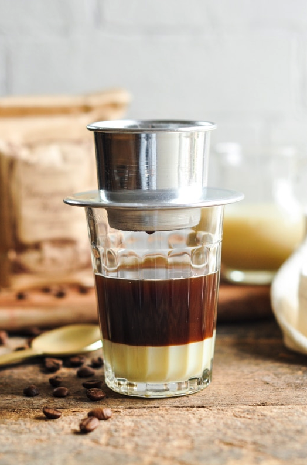

The Vietnamese are serious coffee consumers and like their coffee really strong and bitter. But to counter that bitterness, sweetened condensed milk is used to create a bittersweet beverage which can be served both hot or cold.
To make Vietnamese coffee using espresso
To make Vietnamese coffee using a traditional Vietnamese coffee filter (phin)
 



 

I like this website's use of large imagery. It does a great job of grabbing a user's attention and drawing them into clicking on the recipe.
bon appetitI like how this website is able to portray large amounts of information in a given space. I like its varying use of columns and rows to display different recipes and how seamless the transitions are as a user scrolls down.
MomofukuI like this website's for its page layouts and use of different colors. This website isn't primarily a recipe website, but it was pretty easy to navigate to its recipes page.
I was really drawn to the minimalist and subtle look and layout of this website. I like the subtly of the font and how it allows the images to stand out more, which is something I would like to have when designing my rceipe webpage.
Largo StudioI like this website's use of font and imagery, which I think are very bold. The transitions and user journey are also really seamless and the website itself is very navigable.
Bang and OlufsenI like how the user initlaly sees a full width image in the background, which is still well contrasted with the text that is over the image. The overall website is very sleek with its layout and font choices, which is something I will consider with my own webpage.